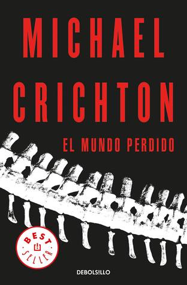

El Mundo Perdido
Reseña por Jorge I. Zuluaga

Ver detalles · Ver reseña en GoodReads (necesita cuenta)
Lo que no esperaba era que Michael Crichton lo lograra otra vez: que pudiera escribir otra novela sobre el mismo tema que fuera tan o más buena que la primera.
¡Pero lo logró!
Naturalmente sabía que la película que lleva el nombre de este libro y que tuve, como la primera, el placer de ver y disfrutar hace más de 20 años con mis hijos, había sido, como "Jurassic Park", un éxito cinematográfico. Pero las segundas partes, sean de libros o de películas, conllevan siempre el riesgo de un desgaste. "No pasó con la película, pero podría pasar con el libro", pensaba antes de leer "El Mundo Perdido".
¡Pero no pasó!
Si bien "Jurassic Park" será siempre un clásico del género, un libro que inauguró la ficción paleontológica de nuestro tiempo, yo personalmente encontré en "El Mundo Perdido" una novela de mayor calidad, una versión mejorada y ampliada de la primera y no simplemente una predecible continuación de un éxito reconocido.
A pesar de que dicen que Crichton escribió esta novela presionado por el éxito de la adaptación al cine de "Jurassic Park", y de que incluso pudo estar pensando mientras escribía en esa segunda adaptación al cine (lo digo por la acción trepidante y porque algunas escenas de "El Mundo Perdido" le hacen a uno pensar que Crichton estaba pensando más en la acción cinematográfica que en la narración literaria), siento que la historia, las aventuras de sus protagonistas y el trasfondo científico de esta novela son más cercanos a los que esperaríamos del contacto entre humanos y un ecosistema mesozoico revivido en el presente. Como amante de los dinosaurios y en general de la paleobiología, y como científico también, creo que "El Mundo Perdido" es mucho más satisfactorio que "Jurassic Park" y me dispongo a explicar el porqué de esta apreciación.
Para usar una comparación biológica, mientras que "Jurassic Park" se desarrolla, literal y figuradamente hablando, en un zoológico, en un ambiente controlado y limitado espacial y temporalmente, en el que los humanos son los protagonistas y los animales simplemente parte del decorado —un decorado terrorífico en este caso—, "El Mundo Perdido" tiene lugar en una reserva de vida silvestre, con todas las complejidades de la relación entre los animales que viven en ella; animales que ahora son coprotagonistas de la historia, que tienen sus propias motivaciones e intereses y en la que los humanos aparecen como intrusos que deben ajustarse a las reglas del nuevo ecosistema.
A mi parecer, este cambio de enfoque hace de esta novela un mejor producto literario y, ¿por qué no?, también un mejor producto de entretenimiento que la anterior.
Por supuesto, siendo una continuación de la historia desarrollada en "Jurassic Park", "El Mundo Perdido" no puede funcionar aislada y tal vez lo justo es decir que los libros deberían leerse siempre juntos.
Como me pasó con "Jurassic Park", una de las cosas que más disfruté de "El Mundo Perdido" fue la cantidad de buena ciencia y buena técnica que contiene. La descripción detallada de las características de las especies, el uso de los nombres científicos de casi todas ellas, la descripción de sus comportamientos (etología) —muchos de ellos basados en ciencia verdadera y otros como parte de la licencia creativa del autor—, hacen de "El Mundo Perdido" un verdadero tesoro para nerds paleontológicos.
La ciencia de los sistemas complejos en esta segunda novela es mucho más sólida y mejor fundamentada que en la anterior (soy físico y creo tener los criterios técnicos para juzgarlo). Se nota que Crichton estudió el tema más a fondo o que recibió una asesoría más completa en el tiempo que medió entre ambas novelas.
Me encantó que Crichton introdujera en esta novela un personaje femenino protagónico y de gran fortaleza como el de la doctora Sarah Harding. Este hecho marca una diferencia importante con "Jurassic Park", en la que las mujeres juegan un papel estereotipado, bien como cuidadoras o bien como personas que deben recibir cuidados y que no logran hilar frases muy complejas relacionadas con la trama; todo esto, por supuesto, con el debido respeto de la doctora Ellie Sattler (guiño, guiño), que fue mejor representada en la película que lo que está descrita en la novela de "Jurassic Park". Incluso, la joven Kelly Curtis, la otra protagonista femenina de "El Mundo Perdido", es representada aquí como una joven dotada para la informática, jugando el papel que tuvo un varón, el joven Tim Murphy, en la primera novela. Creo que Crichton o bien entendió mejor el impacto que poner a mujeres en roles menos estereotipados puede tener entre sus lectoras y lectores por igual, o bien que le asesoraron mejor en este tema antes de publicar una nueva novela.
Como siempre, las reflexiones de carácter filosófico y científico, casi todas ellas motivadas por las intervenciones de Ian Malcolm, el único personaje que se repite de "Jurassic Park", son excepcionalmente buenas. Si ya en "Jurassic Park", Crichton, en la voz de Malcolm, se había despachado unas buenas críticas sociológicas de la ciencia, en "El Mundo Perdido" las reflexiones se amplían para incluir temas como la globalización amplificada por las redes informáticas (que para el tiempo en el que se escribió el libro estaban apenas ganando impulso), la extinción natural y no tan natural de especies en la Tierra, o la historia del desarrollo de las ideas de la evolución biológica, entre otras.
Hay cosas que obviamente no me gustaron.
Nunca entendí, por ejemplo, la necesidad de introducir unos personajes infantiles en esta novela. Más allá de las presiones que pudo sentir Crichton para desarrollar un producto que se pudiera convertir en una película para toda la familia, "El Mundo Perdido" podría funcionar perfectamente bien sin estos niños. Es cierto que a la larga uno termina encariñándose con ellos, pero su presencia en la novela es un poco forzada.
Hay también situaciones que resultan simplemente inverosímiles y que son más propias de "enlatados gringos" que de una buena novela de terror científico.
En resumidas cuentas, por donde quiera que se la mire, "El Mundo Perdido" es una novela que vale la pena. Entretenida, informativa y la continuación perfecta de la primera novela de la bilogía, la popular "Jurassic Park".
P.D. En el momento en el que le doy los últimos toques a esta reseña, me preparo para volver a ver la película de Spielberg, que no veo desde hace más de 20 años. Vamos a ver qué tal ha envejecido, pero más importante, qué tan cercana es a la novela.
P.S. Vi finalmente la película y no puedo creer que me haya gustado la primera vez: ¡qué lata! Me voy a explayar en este post scriptum porque no aguanto la indignación y quiero desahogarme.
¡Qué mala adaptación de Spielberg de la novela! No puedo creer que hayamos admirado tanto a un director que le hace esto al fandom de Crichton (del que ahora me considero parte).
No puedo asegurarlo, pero se nota que hubo roces entre los dos artistas, el escritor y el director de cine, acerca del contenido de la nueva historia que sigo pensando se hizo a pedido de la industria cinematográfica. Solo así puedo explicar por qué Spielberg distorsionó tanto la historia.
Hay personajes nuevos completamente innecesarios (el “documentalista”, el hijo de Hammond, los cazadores de dinosaurios que usan audífonos, etc. ¡pamplinas!); también hubo personajes protagónicos que fueron excluidos sin ninguna razón: esperaba ver la representación cinematográfica del fastidioso pero en cierta forma entrañable Richard Levine, el Sheldon Cooper de la novela; Arby, el niño prodigio, también hizo falta (además de ser el joven afroamericano de la novela), incluso el ingenioso y valiente Jack Thorne, reemplazado por un personaje de medio pelo —literal y figuradamente hablando—. ¡Estoy realmente ofendido!
La Sarah Harding de esta versión de plástico es una caricatura del personaje de la novela (a pesar de ser interpretada por la maravillosa Julianne Moore). Para empezar, en la película es paleontóloga, pero no lo es en la novela, y ese hecho tiene una razón importante; en segundo lugar, la Harding de la novela salva en varias ocasiones a los otros protagonistas; en la película es salvada por los hombres. ¡Qué mal gusto de Spielberg!
Por supuesto, los efectos especiales que muestran la acción entre dinosaurios de distintas especies mejoran mucho en esta película respecto a su predecesora, "Jurassic Park", pero ¡a qué costo, maldita sea!
¿Y dónde está el Carnotaurus, Steven?
Spielberg y su sed por productos de consumo mataron la novela de Crichton. No vean a Spielberg, lean a Crichton.